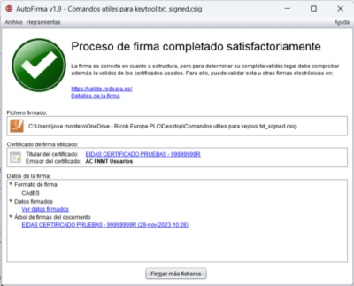

Tras finalizar una firma electrónica, se muestra una pantalla con información sobre el resultado de la operación. Esta información se divide en tres secciones principales:
Información sobre el fichero firmado
Se muestra la ruta completa hacia el fichero firmado (puede copiar esta ruta pulsando sobre ella con el botón
derecho del ratón). Si se realizó la firma PAdES de un documento PDF, se mostrará un botón
para abrirla (se usará la aplicación predeterminada del sistema operativo).
Información sobre el certificado utilizado para realizar la firma
Es posible ver el certificado (mediante la aplicación predeterminada del sistema operativo) pulsando en los
hiperenlaces. Adicionalmente, si se utilizó DNIe para firmar, se da la posibilidad de comprobar la validez
del certificado de firma del DNIe. Para realizar esta comprobación es necesario contar con conexión a
Internet, ya que se accede a los servidores OCSP de la FNMT-RCM. Es importante tener en cuenta que el periodo de validez
se comprueba contra la fecha del sistema, por lo que debe comprobar que esta esté bien establecida para evitar
errores de validación.
Información detallada sobre la firma electrónica
Informando al menos de los siguientes puntos mediante una estructura de árbol:
Para desplazarse entre los hipervínculos de un mismo párrafo de texto o entre los elementos del árbol es posible usar los cursores del teclado. Tenga en cuenta que para acceder al destino de algunos de estos hipervínculos es posible que se necesite conexión a Internet (se le indicará que el destino está en la Web en el mismo texto).